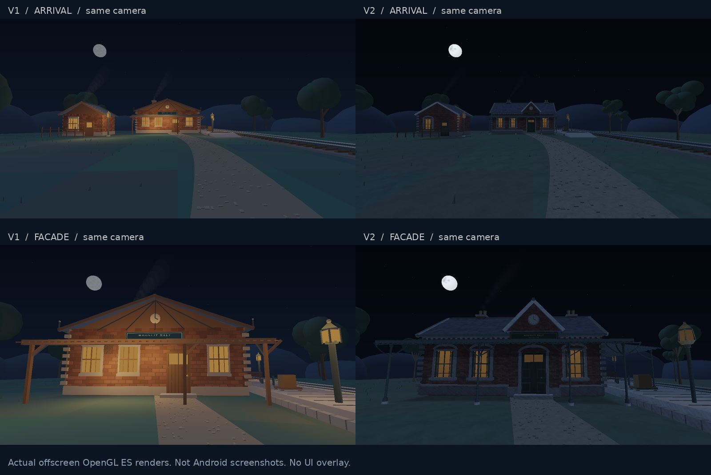

同一条小路，另一种月光。
以下是原型实际几何、着色器和纹理的 OpenGL ES 离屏渲染。相机坐标、视角、画幅与时间保持相同，未调色。它们不是 Android 截图，也不包含网页 UI。v1 的 Canvas 站牌文字使用近似字体；v2 使用原图。

点击图片查看原尺寸。车站正面 · 原尺寸
站台近景 · 原尺寸
已检查语法、几何、交互逻辑及原生 GLES 绘制。v2 在 iQOO 15 上的触屏、声音、浏览器兼容性和稳定帧率尚未实测；不能宣称已稳定达到 60 FPS。